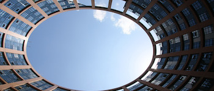
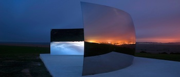
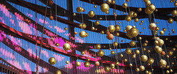
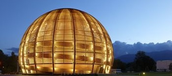

Digital Earth Scalers
Distributed Computing
Earth Observations
Social Web
Our mission is to innovate services in Earth Sciences,
tailored for data-intensive applications.
Welcome to the next generation of web & cloud infrastructures
Operations support
We deliver operational solutions for researchers.
Cloud Platform
The new Platform economy is opening up new perspectives.
Earth System Science
Resource three description.
Partner programs
Resource three description.

Developer tools
Scalable scientific processors: Grid Processing on Demand.

Data-as-a-Service
Earth data.

Digital marketplaces
We are actors of the Research Continuum, helping our partners to curate and deliver scientific information, from raw data to publication.

Web 2.0 innovation
The Web as a Platform.
Take a new direction:
solutions to deploy scalable applications,
anywhere, anytime
Solutions that transform how people exploit Earth Science data
Our expertise levels-up the digital earth
We've built Terradue Cloud Platform on the principles and vision developed for the data-driven economy
Good quality, reliable and interoperable datasets, shared with no geographical restrictions
Connectivity to fast Internet and Infrastructures to reach the data and run massive processing
A platform for users to develop skills and knowledge to meet the demands of eScience
A platform connected to public sector, boosting two-way technology & knowledge transfer
A platform to support Earth Sciences in adopting new data services in the digital era